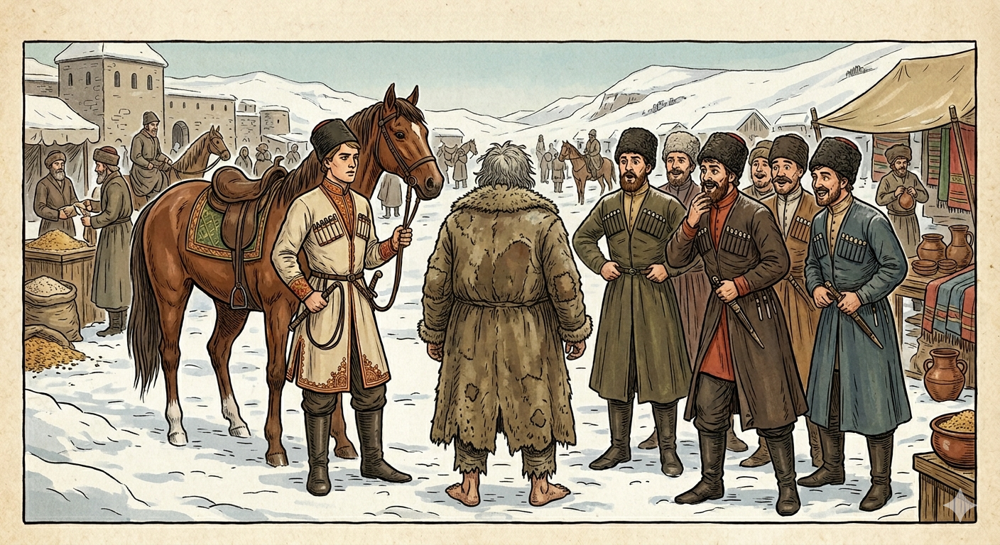

И.А. Дахкильгов. Хьехаме дувцарш - поучительные рассказы-притчи.
И.А. Дахкильгов. Хьехаме дувцарш - поучительные рассказы-притчи. Из ингушского фольклора.

Йоацачунгара йоаккхаеннаяц
1ай, йоккхача базара юкъе, латташ хиннав цхьа лоамаро. Т1акхоллаш й1аьха кетар хиннай цун. Говраца воаг1аш хиннав кура цхьа баьре. Лоамарочунга кхайкхав из: - Яьй! Новкъазара вала, мунда мо ца латташ! - Со мунда а яц хьона, со наькъазара а валац хьона. Хье вала наькъазара, хьай д1аваха везе, - аьннад лоамарочо. - Аз бергба хьа болх! – аьнна, баьречо шод эйешшехьа, лоамарочо т1ера 1оозаваь, лаьтта воссаваьв баьри. Аз фунехка-минехка дергда, яхаш, чуг1ертав баьри. - Д1авала, х1ама дергдац 1а. - Аз хачи йоаккхаргъя хьа! - Даьсара йоаккхаргъяц, 1а хац сона, хьоморг ворх1 хилча а. - Сабар де 1а, - аьнна, яхье вахача баьречо шийна т1ехьаваьккха ялх саг воалаваьв. Т1аккха аьннад: - Гой хьона, тхо ворх1 саг волаш. Алал х1анза йоаккхаргъяц, аьле. - Шо ворх1е хац сона, шо ткъаь итт г1ертача а йоаккхаргьяц, йоацчунгара мишта йоаккха оаш, - аьнна, кетара шаккхе 1ерж д1ай-схьай лостаяьй лоамарочо. Т1акхелла кетар йоацар дег1а т1а цхьаккха х1ама долаш хиннавац лоамаро. Белабенна д1абахаб баьреи цунцара доттаг1ийн. Цигара хьадог1а кица: “Йоацачунгара ворх1анега а йоаккхаеннаяц хачи”.
РУССКИЙ
Не возьмешь того, чего нет
Зимой, посреди ярмарки стоял некий горец. На нем была длинная шуба. Наткнулся на него некий гордый всадник. Он окликнул горца: - Эй! Посторонись! Чего стоишь, как пугало? - Я тебе не пугало и с места не сдвинусь, объезжай, если тебе надо, - был ответ. - Я тебе покажу! – пригрозил всадник, взмахнув нагайкой. Но тут горец проворно стащил его с коня. Посыпались угрозы разгоряченного всадника. На что горец спокойно сказал: - Перестань, ничего ты мне не сделаешь. - Да я спущу с тебя штаны! - Клянусь богом, не спустишь. И не только ты, даже семерым это не под силу. - Посмотрим же, - пригрозил разгоряченный всадник, а затем пошел и привел шестерых своих товарищей. - Смотри, горец, видишь, нас семеро. Теперь ты уверен, что мы не сможем спустить твои штаны? - Вас только семеро? Даже если тридцать человек набросится на меня, этому не бывать, - ответил горец и распахнул обе полы своей шубы: бедный горец был совершенно гол. Засмеялись и ушли всадник и его товарищи. С тех пор и говорят в народе: “Даже семеро не спустят штаны с того, у кого их нет”.
ENGLISH
НОХЧИЙН
ПОГОВОРКИ